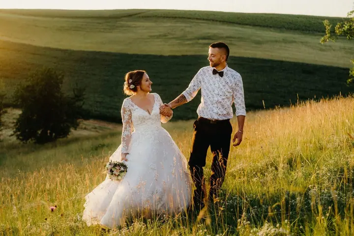
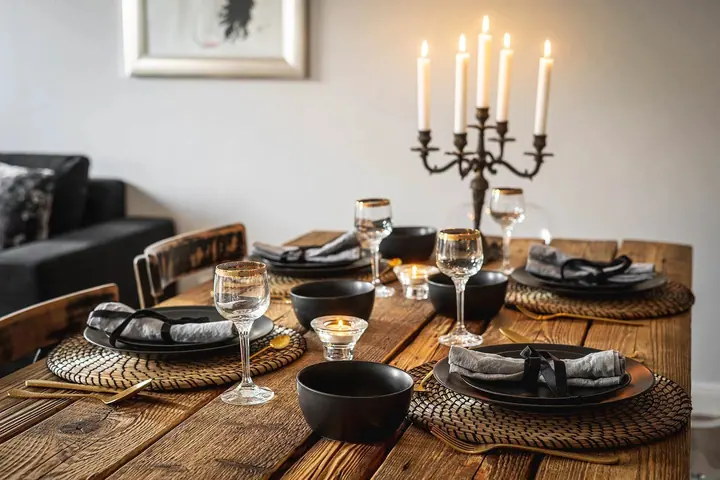
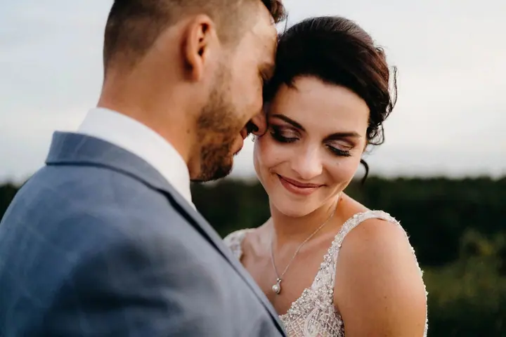
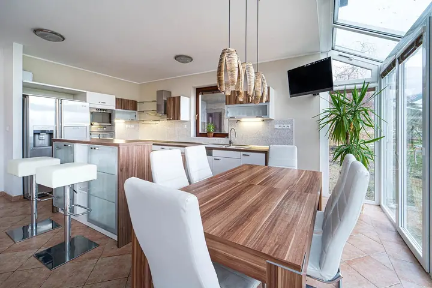
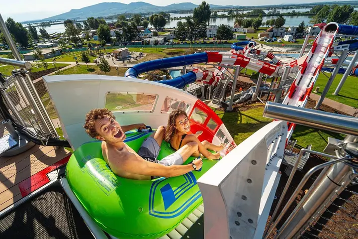

01 / 04
Svatební focení
Celý den, 10 až 12 hodin focení, přirozeně a bez zbytečného pózování. Ochutnávku fotek máte do 3 dnů a celou galerii s více než 600 upravenými fotkami do 2 až 3 týdnů.
Zeptat se na termín→








Svatební fotky plné emocí
Zeptat se na termín →(01) Ahoj
Jmenuji se Marek Topolář a fotím svatby v Brně a na jižní Moravě, ale klidně kdekoliv po celé republice. Kromě svateb fotím i firemní akce, interiéry a exteriéry a děti ve školách a školkách. Nejvíc mě ale pořád baví zachytit emoce, které si nikdo nenaplánoval.
(02) Co fotím
01 / 04
Celý den, 10 až 12 hodin focení, přirozeně a bez zbytečného pózování. Ochutnávku fotek máte do 3 dnů a celou galerii s více než 600 upravenými fotkami do 2 až 3 týdnů.
Zeptat se na termín→02 / 04
Fotím firemní večírky, akce i lidi při práci. Fotky se hodí na web i na sociální sítě.
Zeptat se na termín→03 / 04
Fotím interiéry a exteriéry pro reality, penziony a ubytování. Snímky jsou světlé a čisté, aby prostor vynikl.
Zeptat se na termín→Dále nabízím
Fotím děti ve školách a školkách. Snažím se, aby fotky byly hravé a uvolněné a nepůsobily strojeně.
↗(04) Postup
Od první zprávy po hotovou galerii.
Krok 1 z 4
Vyplníte krátký formulář s informacemi o vaší svatbě. Ozvu se vám obratem.
Krok 2 z 4
Potvrdím, jestli mám váš termín volný, pošlu kompletní ceník a domluvíme se na schůzce nebo hovoru, online nebo osobně v Hustopečích.
Krok 3 z 4
Pokud si vzájemně sedneme, potvrdíme spolupráci. Pomůžu vám i s plánováním dne a můžeme se začít těšit.
Krok 4 z 4
Fotím nenápadně a s respektem 10 až 12 hodin. Ochutnávku máte do 3 dnů a kompletní online galerii do 2 až 3 týdnů.
Fotky, které budou mít hodnotu i za 50 let
(05) Za objektivem
Věřím, že síla fotky se skrývá v emocích. Proto jsou pro mě nejdůležitější vzpomínky vás a vašich nejbližších. Svatby fotím přes 10 let a nafotil jsem jich víc než 200, většinu v Brně a okolí. A pořád mě to baví.
Fotím přirozeně a uvolněně, bez zbytečného pózování. Můj styl ani úpravy nepodléhají krátkodobým trendům. Chci, aby fotky měly hodnotu pro vás i pro další generace, za 5, 20 nebo i 50 let.
Svatební místa na jižní Moravě znám opravdu dobře, a tak jsem sestavil katalog svatebních míst v Brně a okolí. Na svatbu můžu vzít i svou fotobudku a některé chvíle rád nafotím na klasický kinofilm.
Marek
Marek Topolář · Svatební fotograf
Samozřejmě. Sejít se můžeme online nebo osobně v Hustopečích. Ideální je i předsvatební focení, při kterém se poznáme a focení si vyzkoušíte předem.
Ochutnávku svatebních fotek máte do 3 dnů. Celou galerii s více než 600 upravenými fotografiemi a video slideshow odevzdávám do 2 až 3 týdnů.
Svatební focení začíná na 17 000 Kč. Páry u mě do svých vzpomínek obvykle investují kolem 30 tisíc Kč. Kompletní ceník vám rád pošlu, stačí mi napsat.
Ano. Nejčastěji fotím v Brně a na jižní Moravě, ale jezdím po celé České republice a doprava je v ceně.
(07) Kontakt
Napište pár vět o tom, co si představujete, a termín, který se vám hodí.